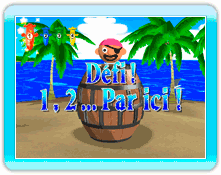
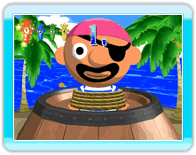
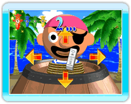
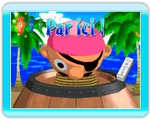

Lorsque vous jouez au mode Pop-Up Party, vous devez parfois soudainement faire face au défi du Capitaine. Cet événement inévitable arrive entre les tours de chaque joueur.
Lorqu'un joueur enfonce son épée dans le tonneau, il sera défié par le Capitaine lors d'un mini-jeu. Si vous gagnez, c'est au tour du prochain joueur. Mais si vous échouez, vous n'avez plus que 3 secondes pour mettre votre épée.
Le défi du Capitaine se joue ainsi :

1. «1,»
L'écran zoome sur le visage du Capitaine et l'icône d'une Wii Remote s'affiche au centre. Le mot «1,» s'affiche à l'écran.

↓

2. «2...»
Ensuite le mot «2...» s'affiche. Attention à votre timing et déplacez l'icône de la Wii Remote vers le haut, le bas, la gauche ou la droite avant que le visage du Capitaine ne bouge.
↓

3. «Par ici !»
Enfin, le mot «Par ici !» s'affiche en même temps que le visage du Capitaine bouge. Si vous bougez la Wii Remote dans la même direction vers laquelle le Capitaine fait face, vous gagnez... Mais si vous avez choisi la mauvaise direction, vous perdez.